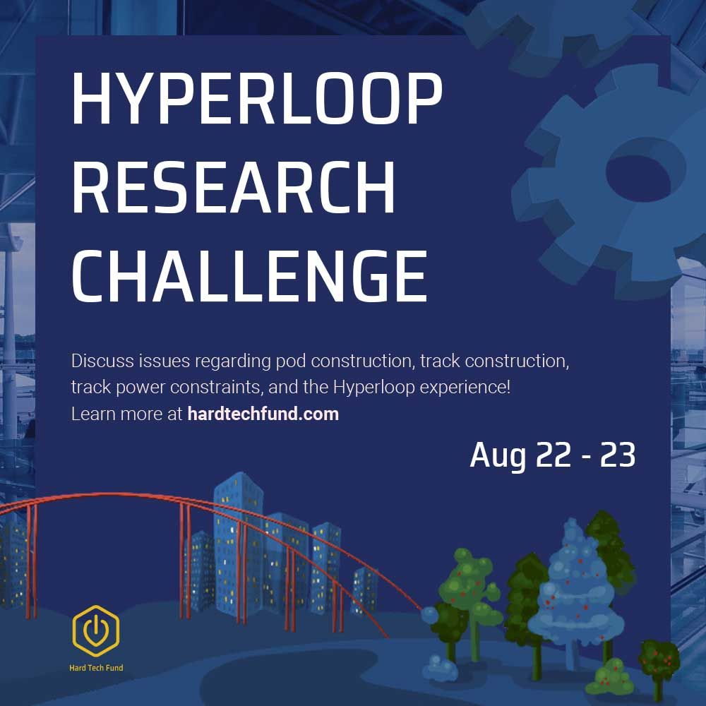

Hard Tech Fund
Website and marketing materials for the HTF Nonprofit
Overview
The Hard Tech Fund (HTF) began as a startup accelerator and development program that assists UC Davis student projects that build hardware with environmental conservation in mind. Eventually it became a non-profit, and the student organization became "Hard Tech Campus" (HTC).
My role in this project was creating the website layout, branding, logos, illustrations, flyers, and other visual marketing materials to promote the Hard Tech Fund, its associated projects, and its mission.
Hard Tech Fund
Logo
The HTF logo is very similar to the HTC logo, except that the surrounding form is hexagonal, to represent a hardware nut instead of a leaf. This is because although the Hard Tech Fund values sustainability, the projects it is involved in emphasises the hardware aspect more.
Gallery

Website
Gallery
Promotional Materials
Promotional materials for the 2020 Hyperloop Symposium.
Gallery
Graphics
The graphics were drawn in Procreate.
Gallery
Hard Tech Campus
Logo and Branding
Since the Hard Tech Fund values sustainability and hardware, the logo takes the imagery of a leaf and combines it with the "on" symbol, which references hardware. The fonts chosen were Saira Semi-Condensed (for its angular tech-like appearance as a display font) and Roboto Light (for its easy readability). The images used were open-sourced (more information in footer) and modified with filters to fit the branding. A brainstorm session and word association activity was first completed to clarify the intentions and goals of HTC.
Gallery


Website
The HTC website can be accessed through links via the main HTF site or at the link below. The site has since been adapted to better flow with the theme of Hard Tech Fund.
Gallery

Deliverables
Google Slide Powerpoint Layout
Gallery

Graphics
The graphics created were based on a cell representing biodesign, and space representing HTC's collaboration with the Space and Satellite Club on campus. They were created using Adobe Illustrator.